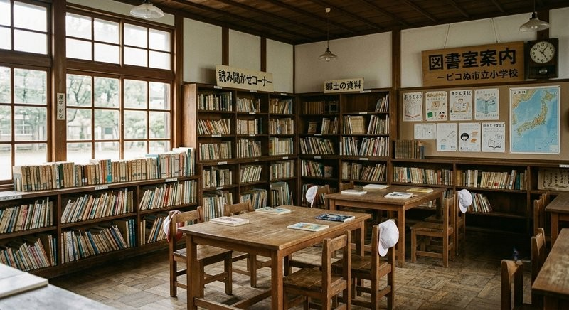

ピコぬ市立図書館は、閉校となった旧市立小学校の木造校舎を活用して運営しています。 校舎の時計塔をはじめ、当時の建具や窓ガラスの多くをそのまま残しており、一般的な 図書館機能に加え、市の記録文化を反映した独自の蔵書構成とコーナーを設けています。 読書そのものだけでなく、本と向き合う時間のあり方にも配慮した館内設計となっています。

館内は、旧教室の木の床と天井をそのまま活かしています。「郷土の資料」コーナーには 校舎が小学校であった当時の資料も一部収蔵しており、「読み聞かせコーナー」では 定期的に読み聞かせ会を開催しています。
蔵書構成
| 一般図書 | 文学・実用書・児童書等、約12万冊 |
|---|---|
| 郷土の資料 | 校舎が小学校であった当時の記録、地域史に関する資料 |
| 読み聞かせコーナー | 旧教室を活用した児童向けスペース。定期的に読み聞かせ会を開催 |
| 現代病関連図書コーナー | キロクぬかクリニック監修による選書。専門書から一般向けの読み物まで |
| 記録文化コーナー | 手帳術、日誌の書き方、記録映像に関する資料など |
| 非効率文庫 | 時間効率支援課との共同企画コーナー。読み終える必要のない本を集めています |
非効率文庫について
「最後まで読み切らなくてよい」ことを前提にした選書コーナーです。貸出期間の延長申請も 随時受け付けており、返却を急かされることはありません。
「最後まで読み切らなくてよい」ことを前提にした選書コーナーです。貸出期間の延長申請も 随時受け付けており、返却を急かされることはありません。
校舎の保存について
旧校舎は、閉校後に取り壊しが検討されていましたが、時計塔を含む外観の保存を望む 声を受け、図書館として転用されました。時計塔の時計は今も現役で稼働しています。
旧校舎は、閉校後に取り壊しが検討されていましたが、時計塔を含む外観の保存を望む 声を受け、図書館として転用されました。時計塔の時計は今も現役で稼働しています。
貸出について
| 貸出冊数 | 一人10冊まで |
|---|---|
| 貸出期間 | 2週間(非効率文庫の資料に限り、延長申請により最長6か月まで延長可) |
| 貸出カード | 市内在住・在勤・在学の方は無料で作成可能 |
開館時間・アクセス
| 開館時間 | 9:00〜19:00(土日祝は17:00まで) |
|---|---|
| 休館日 | 月曜日(祝日の場合は翌平日)、月末整理日、年末年始 |
| 所在地 | ピコぬ市記録町2丁目8番地(旧市立第一小学校跡地) |
| アクセス | ピコぬ中央駅より連結バス「記録町線」で9分、ぬかピコ民芸博物館の隣 |
図書館だより
毎月1回発行している「図書館だより」を掲載しています。貸出ランキングや新刊案内、 特設コーナーのご紹介などを掲載しています。
広報ぬかピコの紙版は、本庁舎・各出張所のほか、当館でも配布・閲覧いただけます。